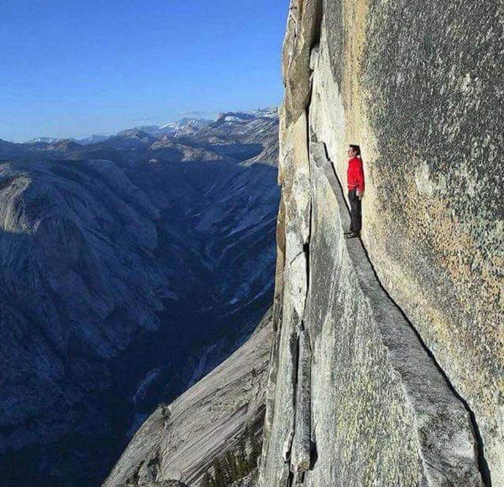

Timeline photos
This is a picture of Alex Honnold having a panic attack while he was free soloing Half Dome.
Free soloing is where you climb without ropes.
This is about the only thing that makes sense about Alex. Everything else is beyond comprehension for most of us.
Fear seems to be the human default. I see it everywhere. And I had a big dose of it in my life yesterday.
It’s always from the same place: What will the future hold? What if I can’t do it? What if I fall?
The cold hard fact is: Yes. You might fall.
But if you don’t try there is a 100% chance you will not succeed.
And that’s the interesting crux of it all. What matters more? Living your dreams or staying alive at any cost? Both are very dangerous.
As an interesting side note sometimes these free solo people like to microdose psilocybin before their climb.
I think, for me, these stories just ask me bigger questions like: what are we doing here? What it point of all this? What do we want to get out of this once in a lifetime ride?